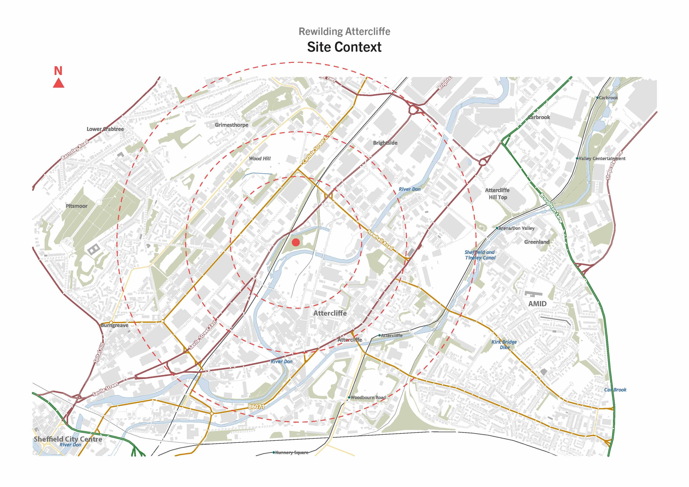
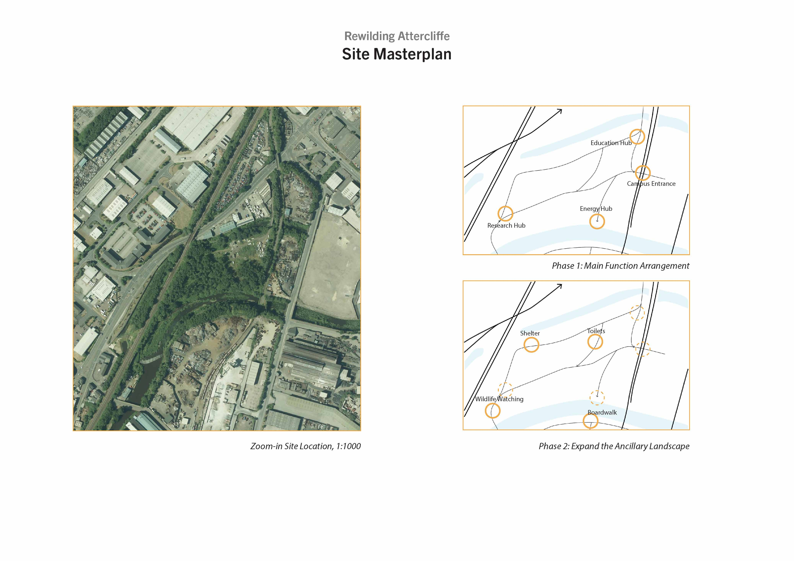
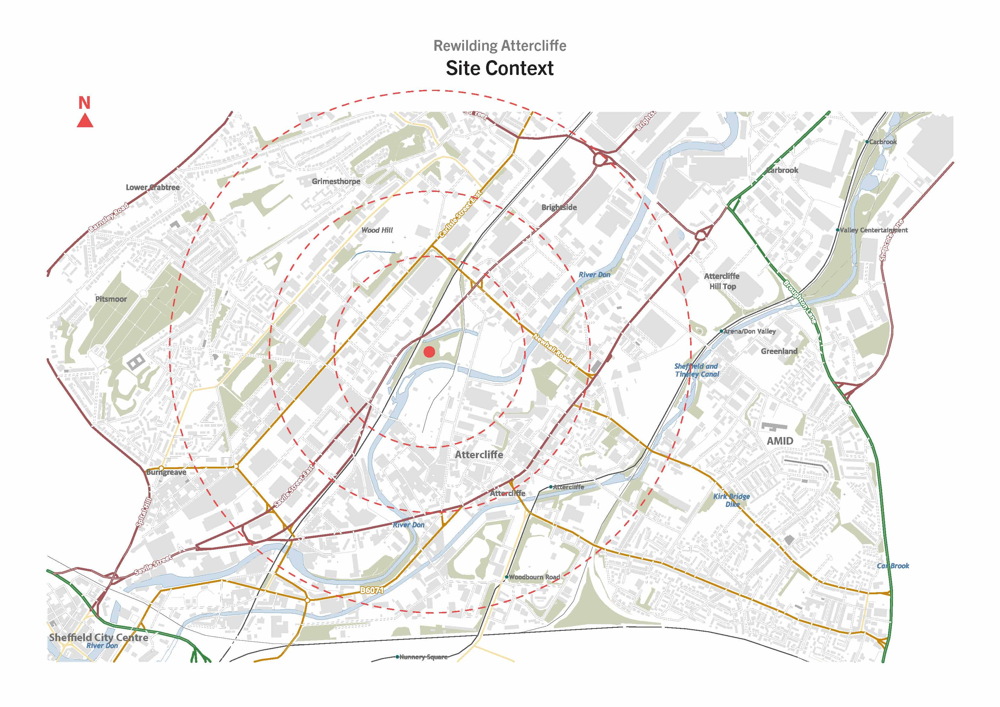
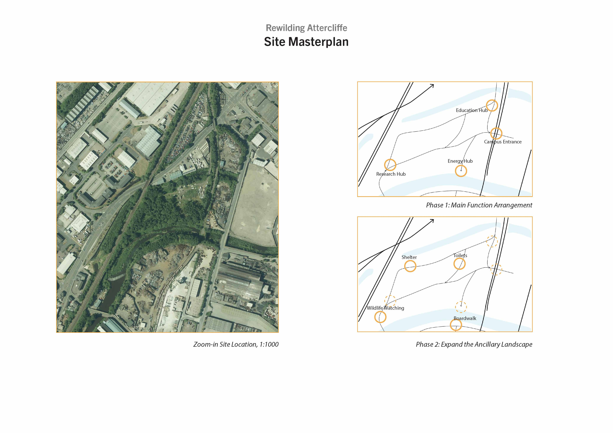

'Rewilding Attercliffe'
Turning the Flood Zone into Wetlands
Information
Spring 2022, Individual work
Instructor: Daniel Jary
Site: Stevenson Rd, Attercliffe, Sheffield
Description
Attercliffe is in danger of the decline of heavy industry, with the area still holding on to its 'the beginning of continental steel works' label. As work in the field of research and development rises in the area, some factories are slowly moving out of Attercliffe, leaving many gaps in the landscape. The value of these sites negates the possibility of them becoming quality housing, instead they provide a valuable opportunity for rewilding. By introducing wetlands, rewilding is the reclamation and restoration of former industrial land in urban areas and can restore the ecology of the town in a cost effective and efficient way. At the same time, wetlands can alleviate flooding along rivers and attract new species, improving the ecological environment.
 


